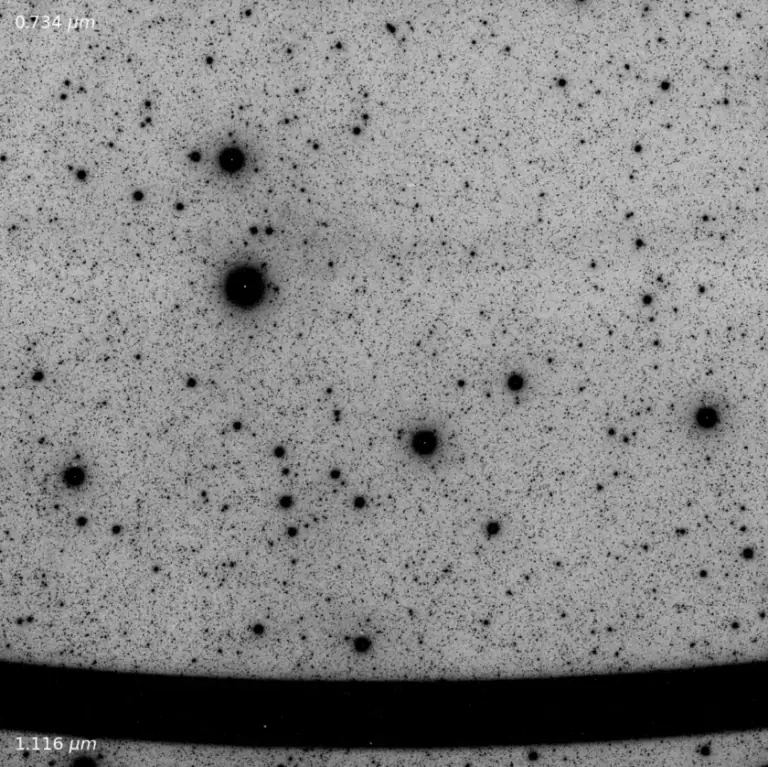

来自未知的信号
Signals from the Unknown
从稻城射电望远镜巡天源表到FRB/PRS起源模型，从SPHEREx亚稳态氦、WHAM/JWST温电离介质到FAST脉冲星搜索与被动雷达空间态势感知，我关注的是隐藏在噪声中的微弱信号，以及它们所揭示的物理图景。
From catalogs of the Daocheng Radio Telescope sky survey to models of FRB/PRS origins, from metastable helium with SPHEREx and the warm ionized medium explored by WHAM and JWST to FAST pulsar searches and passive-radar space situational awareness, I am fascinated by the faint signals hidden in noise and the physical stories they tell.
了解更多 → Learn More →
循迹信号
Following the Signals
DART · FAST · JWST · Radar
DART · FAST · JWST · Radar